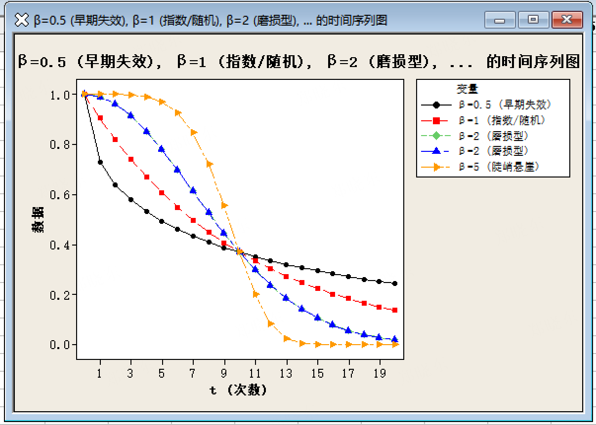

💡 今日知识点：Weibull 形状参数 β
β（形状参数）：最有工程意义的参数——它决定失效率随时间的变化趋势，直接告诉你"失效是天生缺陷还是用坏的"。
【β 值的四种形态】
- β < 1：早期失效型 —— 失效率随时间递减，多为来料缺陷
- β ≈ 1：随机失效型 —— 失效率恒定，多为随机因素
- β > 1：磨损失效型 —— 失效率随时间递增，多为疲劳、老化
- β >> 1（如 >5）：悬崖式失效 —— 产品在某一时间点集中失效
📋 β 四种形态理论数据（η=10，复制到 C1~C5）
| t(次数) |
β=0.5 |
β=1 |
β=2 |
β=5 |
| 0 |
1.0000 |
1.0000 |
1.0000 |
1.0000 |
| 1 |
0.7289 |
0.9048 |
0.9900 |
1.0000 |
| 2 |
0.6394 |
0.8187 |
0.9608 |
0.9997 |
| 3 |
0.5783 |
0.7408 |
0.9139 |
0.9976 |
| 4 |
0.5313 |
0.6703 |
0.8521 |
0.9898 |
| 5 |
0.4931 |
0.6065 |
0.7788 |
0.9692 |
| 6 |
0.4609 |
0.5488 |
0.6977 |
0.9252 |
| 7 |
0.4332 |
0.4966 |
0.6126 |
0.8453 |
| 8 |
0.4088 |
0.4493 |
0.5273 |
0.7206 |
| 9 |
0.3873 |
0.4066 |
0.4449 |
0.5541 |
| 10 |
0.3679 |
0.3679 |
0.3679 |
0.3679 |
💡 列名用纯英文/数字（Minitab 15 中文列名可能报错）。菜单：图形 → 时间序列图 → 选「多个」

▲ β 四种形态对比图：β=0.5（早期失效）、β=1（随机失效）、β=2（磨损失效）、β=5（悬崖式失效）
【理解】
β 是 Weibull 分析里最有价值的一个数——它直接告诉你失效是"天生缺陷"还是"用坏的"。
β<1 查来料，β>1 查设计。
【操作】
做完 Weibull 分布分析后，在输出窗口直接看"形状参数"那一行。不需要额外操作。
【估计方法选择】
若数据高度集中在 2~3 个值（如只有 4 和 5 两个失效点），务必在对话框点「估计」→ 改为"极大似然(MLE)"——否则最小二乘(LSXY)会把 β 算崩到 9+，完全失真。
【结果解读】 关注三点：
- ① β 值本身的区间（在哪个档位）
- ② β 的 95% 置信区间是否跨过 1（跨过 1 说明"可能也是随机失效"，结论要保守）
- ③ AD 统计量：值越小拟合越好。但数据集中时 AD 会异常飙高，此时优先看概率图目视判断